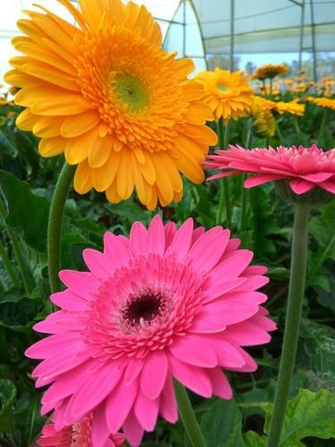

A widget is simply put, an interactive element. A widget displays information and expects the user to act in some way. A few examples of widgets are accordions, buttons, links, checkboxes, sliders, etc.
Native widgets are widgets that use defined HTML5 elements, such as button, input, select or textarea.
An Accordion
Roses
About Rose
Roses for the longest time have enjoyed the honor of being the most popular flowers in the world. The reason for popularity of the rose flower may be its wide variety in terms of color, size, fragrance and other attributes.
The rose has been a symbol of love, beauty, even war and politics from way back in time. The variety, color and even number of Roses carry symbolic meanings. The Rose is most popularly known as the flower of love, particularly Red Rose.
Roses have been the most popular choice of flowers for the purpose of gifting across the world. They also act as a great addition to home and office decor. A bunch of roses or even a single rose works wonders aesthetically and considerably enlivens a place. Besides fresh cut roses, artificial flowers like silk roses in different colors are also widely used as decoration.
Roses have been the most popular choice of flowers for the purpose of gifting across the world. They also act as a great addition to home and office decor. A bunch of roses or even a single rose works wonders aesthetically and considerably enlivens a place. Besides fresh cut roses, artificial flowers like silk roses in different colors are also widely used as decoration.
Gerbera
About Gerberas
Gerbera flowers have a wide range of colors including yellow, orange, cream-white, pink, brick red, red, terracotta, and various other intermediate colors. In double varieties, bicolor flowers are also available. Gerbera flower stalks are long, thin, and leafy and have a long vase life.
Having a long vase life, Gerbera flowers are widely used in the Cut Flower Industry. Gerberas are great flowers for adding color to any room or garden.
The meanings of gerbera flowers stem from those attributed to the general daisy family. These meanings include innocence and purity. Daisies are also a classic symbol of beauty however, the gerbera variety holds an added meaning of cheerfulness, which stems from the assortment of colors available.
Some species of Gerberas, such as Gerbera anandria, Gerbera aurantiaca and Gerbera jamesonii bear the suffix Daisy - Ghostly Daisy, Hilton Daisy, Barberton Daisy, Gerbera Daisy and Transvaal Daisy.

Lily
About Lilies
Globally, Lilies rank fourth among flowers in popularity.
Lilies of different kinds are commonly found all across the globe. Lilies come in different shapes, sizes and colors.
Lilies are really excellent plants for beds and borders. Lilies are suitable for use in a shrub border, as accent plants, a formal or naturalized pool planting. Even some of the small species would fit perfectly in an alpine rock garden.
The Lily flower symbolizes purity and refined beauty. Based on the color or type, the Lily flower can convey different meanings.
Color and symbolic meaning of Lily
Symbolic Meaning of lily
Color
Meaning
White lily
purity, rebirth, modesty and virginity
orange lily
passion, confidence and energy
yellow lily
gaiety, thankfulness, joy and friendship
Red lilies
love and passion
Pink lilies
femininity, admiration
Slider
Modal dialog
Video
Audio
Form
[Manditory field are required marked as asterisks]